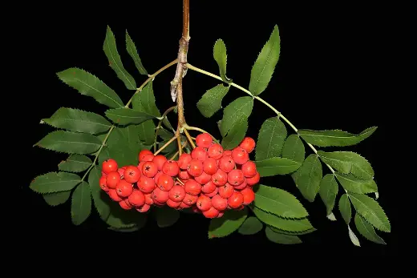

Wild food recipes from the Netherlands
13 dishes made with foraged ingredients, from drinks and preserves to mains and desserts.
Drinks
 Elderflower syrup (vlierbloesemsiroop)Elderflower
Elderflower syrup (vlierbloesemsiroop)Elderflower Sea buckthorn juice (duindoornsap)Sea buckthorn
Sea buckthorn juice (duindoornsap)Sea buckthorn Rose hip tea (rozenbotteltee)Rose hips
Rose hip tea (rozenbotteltee)Rose hips
Starters & snacks
 Zeeland mussels (Zeeuwse mosselen)Blue mussels
Zeeland mussels (Zeeuwse mosselen)Blue mussels Fried samphire (zeekraal)Marsh samphire
Fried samphire (zeekraal)Marsh samphireSauces, preserves & sides
 Blackberry jam (bramenjam)Blackberry
Blackberry jam (bramenjam)Blackberry
Rowan jelly (lijsterbessengelei)Rowan berries, Crab apple Wild garlic pesto (daslookpesto)Wild garlic
Wild garlic pesto (daslookpesto)Wild garlic
 Nettle soup (brandnetelsoep)Stinging nettle
Nettle soup (brandnetelsoep)Stinging nettle Sea beet stamppotSea beet
Sea beet stamppotSea beet Hazelnut cake (hazelnotentaart)Hazelnut
Hazelnut cake (hazelnotentaart)Hazelnut Elderberry pudding (vlierbessenpudding)Elderberry
Elderberry pudding (vlierbessenpudding)Elderberry